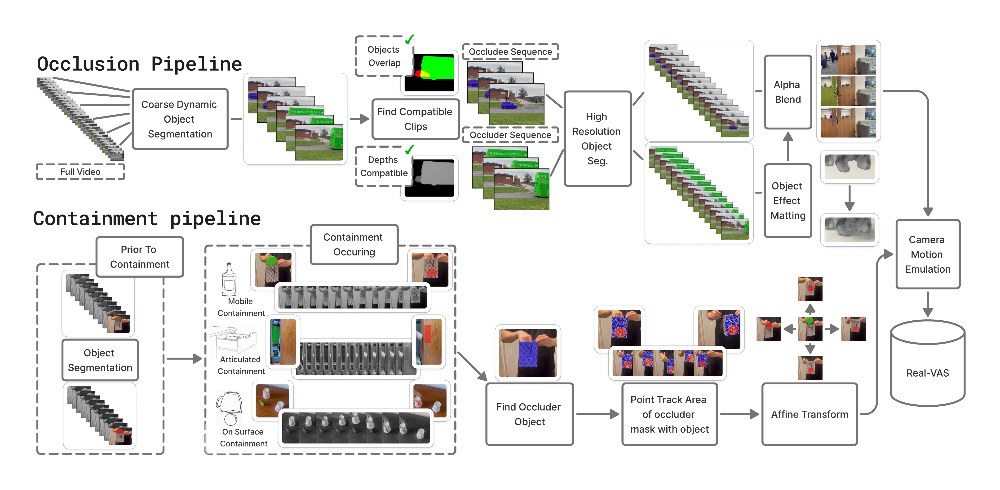
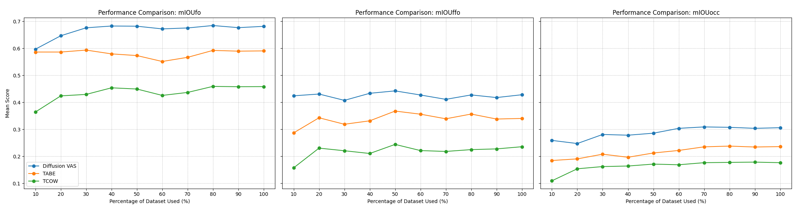
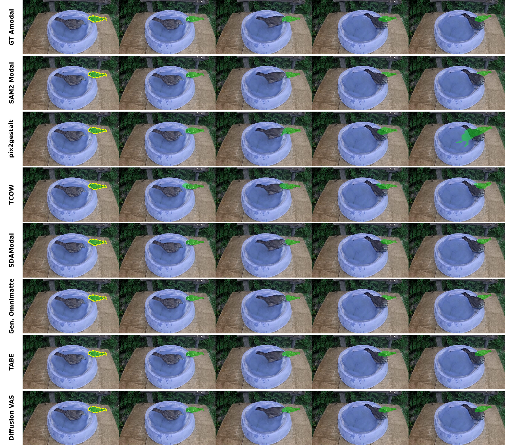
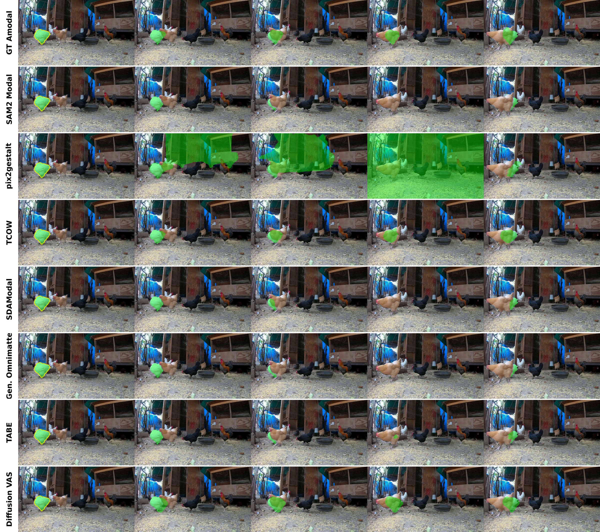
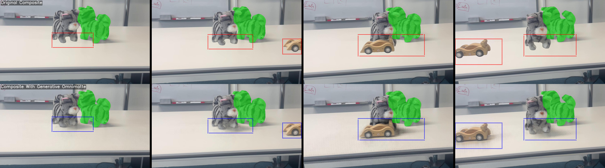

An overview of our Real-VAS data generation pipeline. Occlusion pipeline: from static camera videos, we automatically find compatible pairs of clips that can be composited to form realistic occlusions. Occluder objects and their secondary effects (e.g. shadows) are composited over occludee objects for which accurate ground truth is computed from the unoccluded sequence. Containment pipeline: we identify three scenarios in which tracking the container is sufficient to provide ground-truth tracking of the contained object. For both pipelines, additional camera motion can subsequently be emulated by cropping to a narrower moving field of view.
Example: air_hockey_1. Two separate recordings — a hand hitting a puck,
and a cardboard box on the same table — are composited to create an occlusion scene
where the puck disappears behind the box. The amodal ground-truth mask (red) stays exact
behind the box because it comes from the unoccluded BG clip.
IMG_7668 — drawer. A different container type:
green CoTracker3 points track the drawer
handle; yellow is the resulting amodal mask of the object stowed inside.
IMG_7700 — mug held by hand.
Red: CoTracker3 points on the mug surface
(hundreds of them). Green: object trajectory.
Yellow: resulting amodal mask of the object inside.
| Method | Inputs | Run type | mIoUfo | mIoUffo | mIoUocc |
|---|---|---|---|---|---|
| pix2gestalt | Modal Seg. | Online | 0.411 | 0.060 | 0.136 |
| TCOW | / | Offline | 0.426 | 0.179 | 0.165 |
| SDAmodal | Modal Seg. + GT BBox | Online | 0.526 | 0.059 | 0.146 |
| Generative Omnimatte | Modal Seg. | Offline | 0.416 | 0.045 | 0.062 |
| TABE | Modal Seg. | Offline | 0.501 | 0.209 | 0.207 |
| PCNet | Modal Seg. + GT BBox | Online | 0.452 | 0.030 | 0.011 |
| Diffusion VAS | Modal Seg. | Offline | 0.604 | 0.267 | 0.262 |

Per-method performance against (left) occlusion severity and (right) occlusion duration. Harder occlusion events depress every method's mIoU, with the largest absolute drops on the Diffusion-based approaches that are otherwise the strongest in the easy regime.


Qualitative predictions across methods on representative Occlusion and Containment sequences. Yellow outline is the Real-VAS ground-truth amodal mask.

We use Generative Omnimatte to carry the occluder's secondary effects (cast shadows, reflections) through the compositing step — top: naive compositing, bottom: ours.
@inproceedings{hudson2026realvas,
title = {Real-VAS: A Real-World Video Amodal Segmentation Dataset},
author = {Hudson, Finlay G. C. and Smith, William A. P.},
booktitle = {Under review},
year = {2026}
}